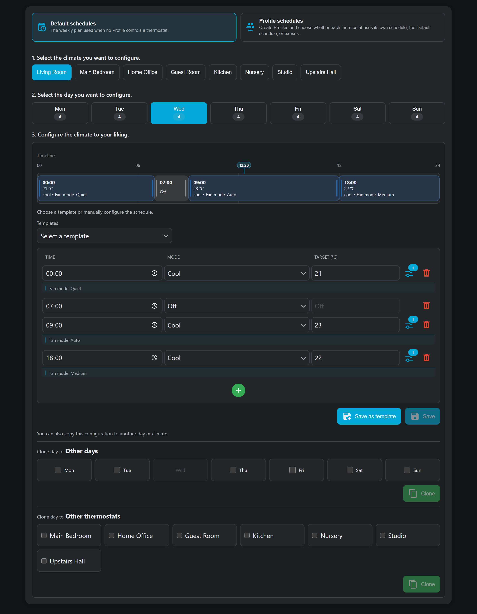

01
Visual weekly schedules
For each period, choose a start time, HVAC mode, temperature or native heat/cool range, and any supported climate options. That block stays active until the next one begins.
Read the scheduling guide